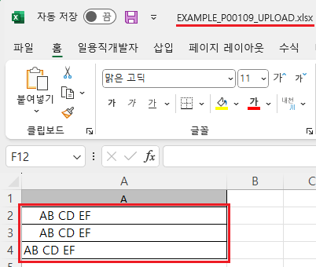
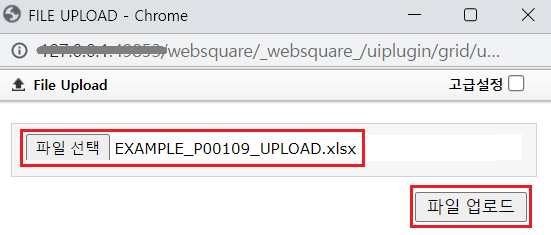
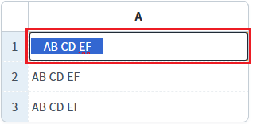
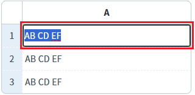

GridView의 'advancedExcelUpload' 메소드의 첫 번째 인자인 JSON 객체의 'trim'을 사용하여, 엑셀 업로드 시 엑셀 파일의 셀에 포함된 공백을 제거하는 예제입니다. 'trim'을 '1'로 설정하면, 엑셀 파일의 셀 데이터의 앞뒤 공백을 제거하고 GridView에 업로드됩니다.
엑셀 업로드하기 - 기본 동작
엑셀 업로드하기 - 업로드 옵션 "trim" 적용
1
STEP 1: 업로드할 엑셀 파일을 다운로드합니다.
'엑셀 업로드 파일 다운로드' 버튼을 클릭합니다.
다운로드한 엑셀 파일을 실행합니다.
엑셀 파일의 "A" 컬럼의 데이터 앞뒤로 공백이 포함되어있음을 확인합니다.
Image 1.다운로드된 엑셀(2021) 파일 예시

2
STEP 2: 다운로드한 엑셀 파일을 업로드합니다.
'엑셀 업로드 - 기본' 버튼을 클릭합니다.
'파일 선택' 버튼을 클릭하여 다운로드한 엑셀 파일을 선택하고 '파일 업로드' 버튼을 클릭합니다.
Image 2.브라우저(Chrome) 실행 예시 - 엑셀 업로드 팝업

3
STEP 3: 실행 결과를 확인합니다.
GridView에 엑셀 데이터가 업로드됩니다. 각 셀을 클릭하여 수정 모드로 변경합니다. 셀의 문자열 앞뒤에 공백이 포함되어 있는 것을 확인할 수 있습니다.
Image 3.브라우저(Chrome) 실행 예시

1
STEP 1: 업로드할 엑셀 파일을 다운로드합니다.
'엑셀 업로드 파일 다운로드' 버튼을 클릭합니다.
다운로드한 엑셀 파일을 실행합니다.
엑셀 파일의 "A" 컬럼의 데이터 앞뒤로 공백이 포함되어있음을 확인합니다.
Image 4.다운로드된 엑셀(2021) 파일 예시
2
STEP 2: 다운로드한 엑셀 파일을 업로드합니다.
'엑셀 업로드 - trim 적용' 버튼을 클릭합니다.
'파일 선택' 버튼을 클릭하여 다운로드한 엑셀 파일을 선택하고, '파일 업로드' 버튼을 클릭합니다.
Image 5.브라우저(Chrome) 실행 예시 - 엑셀 업로드 팝업
3
STEP 3: 실행 결과를 확인합니다.
GridView에 엑셀 데이터가 업로드됩니다. 각 셀을 클릭하여 수정 모드로 변경합니다. 셀의 문자열 앞뒤에 공백이 제거된 것을 확인할 수 있습니다.
Image 6.브라우저(Chrome) 실행 예시

GridView의 'advancedExcelDownload' 메소드를 사용하여 스크립트를 작성합니다. 세부 설정은 아래의 스크립트에 작성되었습니다.
Example 1.Script
//예제 파일의 스크립트 "scwin.btn_ex3_onclick"를 참고하세요. var jsnOptions = { headerExist : "1", //[default: 0] Excel 파일에서 그리드의 데이터에 header가 있는지 여부(1이면 header 존재 0이면 없음) trim : 1 //[default: 0, 1] 엑셀 각각의 셀데이터 좌, 우에 공백이 있는 경우 제거할지 여부 (1이면 제거, 0이면 유지) }; //GridView "grd_exam1"의 엑셀 업로드 실행 grd_exam1.advancedExcelUpload(jsnOptions);
advancedExcelUpload( options )
options.trim